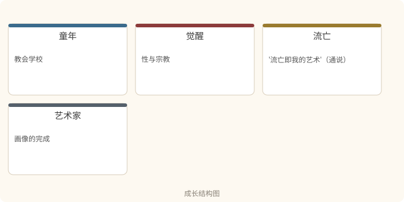

一个青年艺术家的画像
一、基本信息
| 作者 | 乔伊斯 |
|---|---|
| 成书/出版 | 1916年（作者页B321口径：A Portrait of the Artist as a Young Man (1916)） James Joyce — Encyclopaedia Britannica（百科全书） |
| 国别/地区 | 爱尔兰 |
| 时代 | 现当代 · 20世纪初 |
| 体裁 | 长篇小说 |
| 语言 | 英语 |

成长结构图（主题·结构图）
二、创作背景
Britannica（B321）：乔伊斯 major works 含'A Portrait of the Artist as a Young Man (1916)'（B321 作者页定位）。
作者（B321）：'His literary masterpiece is Ulysses (1922)'；Dubliners (1914)。
题材（通说待核）：斯蒂芬·迪达勒斯从童年到大学的成长——'艺术家画像'的自传性小说。
三、内容脉络
斯蒂芬·迪达勒斯：从童年到大学——宗教、家庭、艺术的觉醒（通说待核）。
四、主要人物表
| 人物 | 身份 | 说明 |
|---|---|---|
| 斯蒂芬·迪达勒斯 | 青年 | （通说待核） |
五、主题与艺术特点
- 成长小说与艺术觉醒（通说待核）。
- '流亡即我的艺术'（通说待核）。
- 意识流前奏（通说）。
六、影响与评论
- 作者页：乔伊斯代表作（B321 作者页口径）。
James Joyce — Encyclopaedia Britannica（百科全书） - 作者页：乔伊斯'His literary masterpiece is Ulysses'（B321 作者级）。
James Joyce — Encyclopaedia Britannica（百科全书）
七、阅读建议
难点
- 意识流前奏的叙事。
- 爱尔兰天主教背景。
- 《一个青年艺术家的画像》（人民文学出版社/上海译文版本，通说待核）。
- 英文原版（公有领域渐近）。
先《都柏林人》后本作→《尤利西斯》。
八、待核实
- 1916年出版（B.W. Huebsch说）核对。
- 斯蒂芬·迪达勒斯人名核对。
- '流亡即我的艺术'出处待核。
本页主要来源
乔伊斯的其他收录作品：尤利西斯